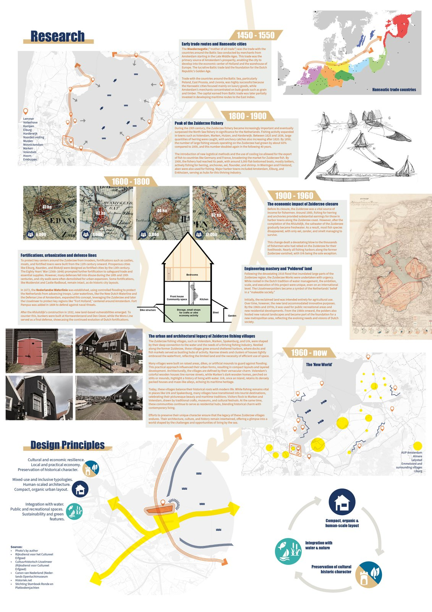
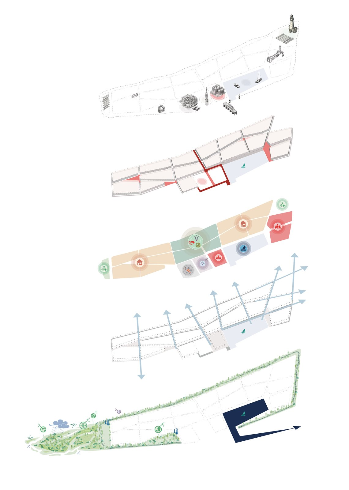
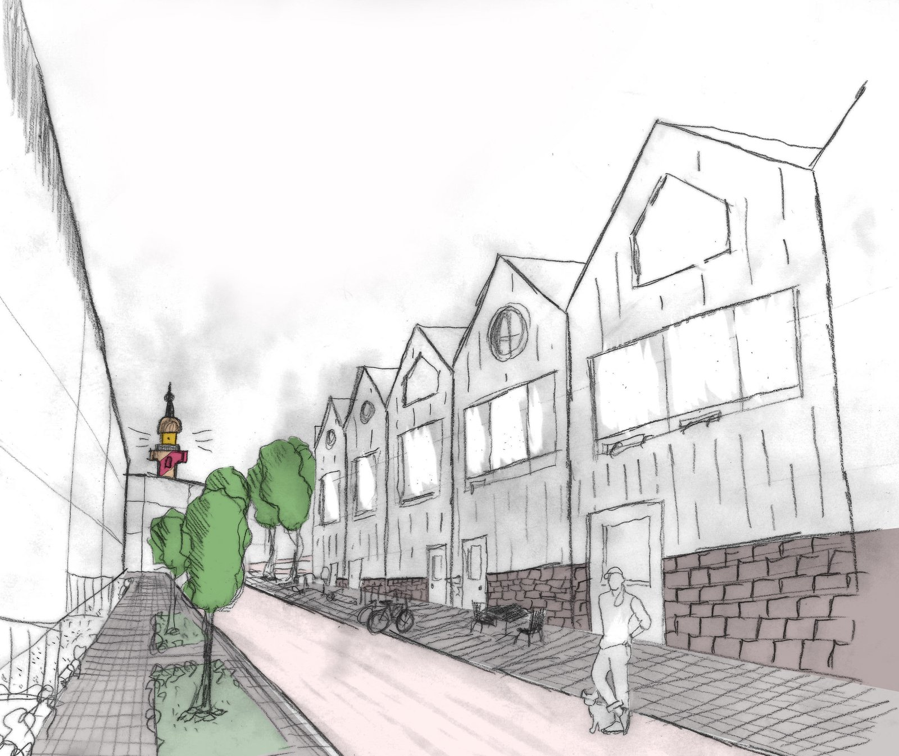
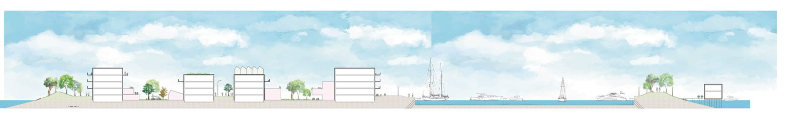
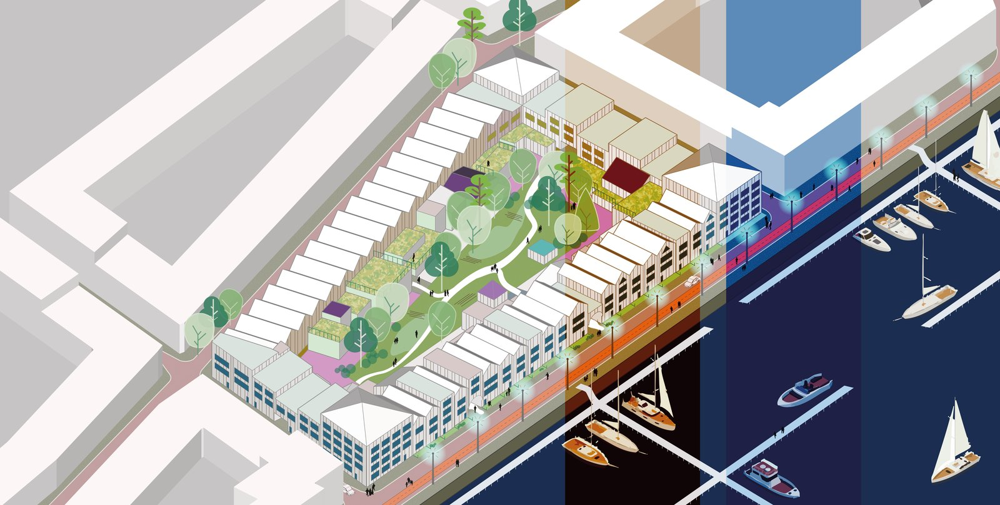

Buiteneiland is the last island of IJburg, Amsterdam’s archipelago in the IJmeer, and the one meant to stay the greenest. For this studio at the Academy of Architecture Amsterdam I designed an urban plan for the island, rooted in the history of the Hanseatic cities along the former Zuiderzee coast and breaking from the city grid the other islands of IJburg follow.
Tutor: Herman Zonderland.




